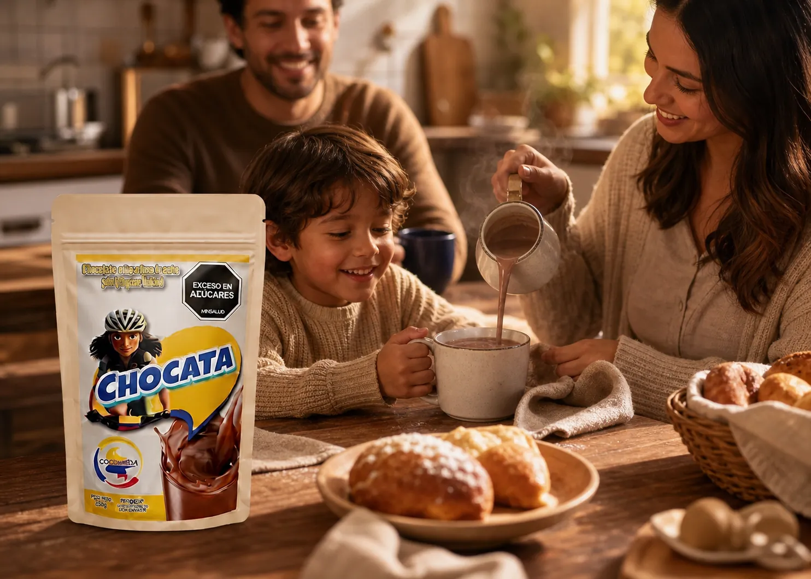
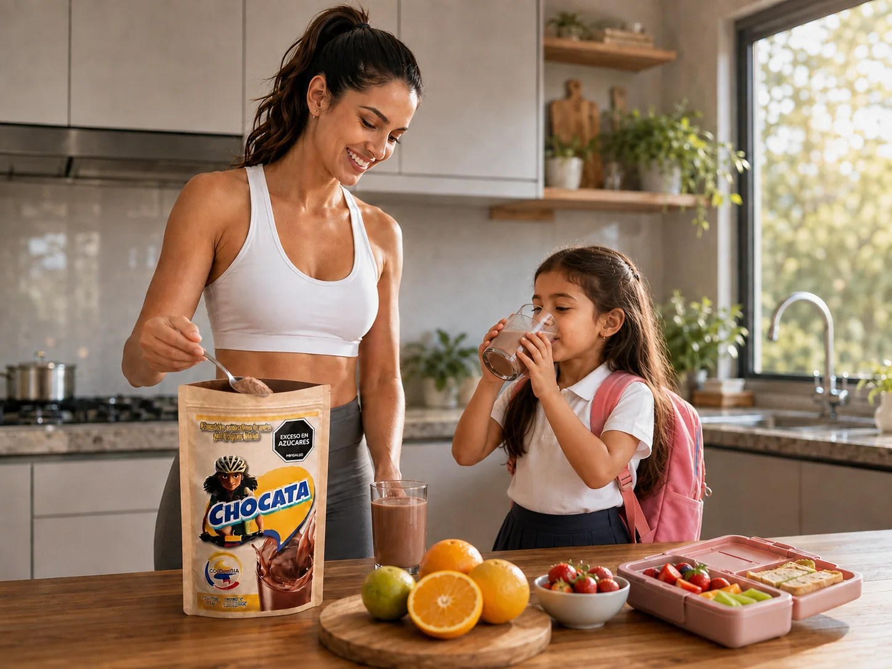
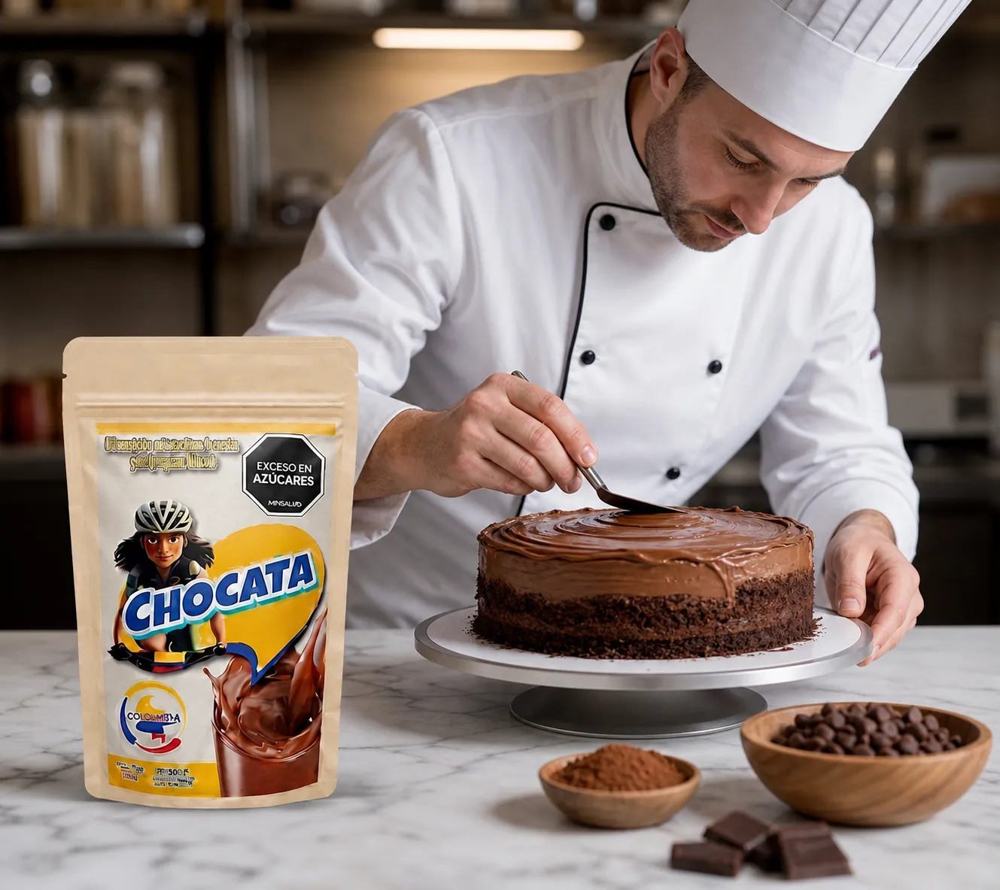

Materia prima pura
Las líneas funcionales se venden como materia prima: un solo ingrediente por bolsa, sin rellenos ni mezclas ocultas.
Nuestra sede física en Cali cerró por el terremoto del 10 de agosto. Seguimos aquí: cada pedido nos ayuda a levantarnos. Ver la historia

Hecho en Cali · Desde el corazón
De la taza de chocolate de la mañana a la creatina después del entreno. CHOCATA es una familia de productos colombianos con materia prima 100 % pura, pensados para el cuerpo que se mueve todos los días.
Desliza
Las líneas funcionales se venden como materia prima: un solo ingrediente por bolsa, sin rellenos ni mezclas ocultas.
Cumplimos la Resolución 810/2021 de MinSalud. Si un producto tiene exceso de azúcares o sodio, lo dice en el frente.
Lote y fecha de vencimiento impresos en cada empaque. Fabricado y empacado por Incolma S.A.S. para CHOCATA S.A.S.
Marca caleña creada por una emprendedora, con el respaldo del Fondo Emprender del SENA.

El origen
«Sabor y pasión» no es un eslogan: es lo que mueve a una emprendedora caleña que no encontraba una bebida con la carga nutricional que su hija pequeña necesitaba. Así que la hizo.
De esa primera fórmula preparada en casa, en Cali, salió CHOCATA. El proyecto creció con el respaldo del Fondo Emprender del SENA y hoy es el chocolate de muchas familias, el formato de repostería de los negocios del barrio y toda una línea de nutrición funcional.
Nació en una cocina, no en un anaquel. La primera fórmula se hizo para una niña. Ese sigue siendo el criterio: si no se lo darías a tu familia, no sale.
Lo que dice la bolsa es lo que hay. Contenido neto, ingredientes y porciones declarados en el frente. Sin mezclas que escondan la dosis real.
Precio de país. Formatos de 200 g a 3.500 g para que la buena nutrición no dependa de una importación.
Agosto de 2026
El terremoto del 10 de agosto obligó a cerrar nuestra sede física en Cali: el local resistió, pero el edificio vecino quedó en riesgo y primero está la vida. Seis años de trabajo no se caen con una pared. Hoy la tienda es esta, y cada pedido sostiene directamente la operación.
El portafolio
Toca cualquier producto para ver su descripción completa, sus beneficios, el modo de uso y las fuentes científicas en las que nos apoyamos.
Los rituales
Cada producto tiene un momento. Así se ve un día CHOCATA en la vida real.
La evidencia
Resúmenes de revisiones sistemáticas, metaanálisis y posiciones oficiales, con enlace directo a la fuente para que puedas verificarlo tú mismo.
La Sociedad Internacional de Nutrición Deportiva (ISSN) la describe como el suplemento nutricional ergogénico más eficaz disponible para aumentar la capacidad de ejercicio de alta intensidad y la masa magra durante el entrenamiento. La suplementación eleva la concentración intramuscular de creatina, lo que explica las mejoras observadas en rendimiento y adaptaciones al entrenamiento.
La ISSN también reporta que la suplementación a corto y largo plazo —hasta 30 g/día durante cinco años— es segura y bien tolerada en personas sanas y en diversas poblaciones clínicas, desde niños hasta adultos mayores, dentro de las pautas recomendadas.
El whey es una proteína de alta calidad, rica en aminoácidos esenciales, que estimula la síntesis proteica muscular tras el ejercicio de forma superior a fuentes de menor calidad. En las primeras tres horas después de la ingesta genera una respuesta mayor que la caseína o la soya, tanto en reposo como después de entrenamiento de fuerza.
Un ensayo en hombres de mediana edad encontró que 20 g de proteína de whey concentrate fueron tan efectivos como 20 g de proteína láctea para aumentar la síntesis proteica muscular. Un metaanálisis adicional documenta un efecto favorable sobre la recuperación temporal de la función muscular tras el entrenamiento de fuerza.
Tras la ingesta, el nitrato se convierte en nitrito y, en condiciones de baja disponibilidad de oxígeno, en óxido nítrico, molécula clave del control vascular y metabólico. La suplementación con nitrato dietario reduce el costo de oxígeno del ejercicio submáximo y, en determinadas circunstancias, mejora la tolerancia y el rendimiento.
En ensayos controlados también se han documentado descensos de la presión arterial en reposo y durante el ejercicio.
Un metaanálisis de 26 ensayos aleatorizados con 1.721 participantes encontró mejoras significativas en hidratación y elasticidad de la piel frente a placebo. Una revisión posterior de 14 estudios con 967 participantes reportó hallazgos consistentes en humedad y elasticidad cutánea.
En el terreno articular, una revisión de 69 ensayos clínicos concluyó que el colágeno hidrolizado es seguro como suplemento dietario para el manejo del dolor articular. Los protocolos habituales usan al menos 90 días de consumo diario.
Según la Oficina de Suplementos Dietarios de los NIH, el magnesio es cofactor de más de 300 sistemas enzimáticos que regulan la síntesis proteica, la función muscular y nerviosa, el control de la glucosa en sangre y la regulación de la presión arterial. Participa además en el transporte activo de calcio y potasio a través de las membranas celulares, esencial para la conducción nerviosa, la contracción muscular y el ritmo cardíaco normal.
Sobre la forma química: las presentaciones que se disuelven bien en líquido tienen mayor absorción, y el citrato figura entre las de mayor biodisponibilidad frente al óxido y el sulfato de magnesio.
La vitamina C es necesaria para la biosíntesis de colágeno, L-carnitina y ciertos neurotransmisores. El colágeno es componente esencial del tejido conectivo y cumple un papel central en la cicatrización. La vitamina C también participa en la función inmune y actúa como antioxidante frente al estrés oxidativo.
Un punto práctico poco conocido: mejora la absorción del hierro no hemo, la forma presente en alimentos de origen vegetal. Por eso tiene sentido tomarla junto a las comidas.
La curcumina, extraída del rizoma de Curcuma longa, es conocida por su actividad antiinflamatoria y antioxidante. Su gran limitación es la baja biodisponibilidad, y ahí entra la pimienta: la piperina administrada junto a curcumina ha mostrado incrementos muy marcados en su biodisponibilidad al aumentar el flujo sanguíneo intestinal, la permeabilidad del enterocito y reducir la actividad de la glucuronidasa. Por eso ambas van juntas en la fórmula.
La maca (Lepidium meyenii) aporta fibra, proteínas, aminoácidos esenciales, ácidos grasos y minerales como hierro, calcio y zinc, además de metabolitos secundarios —macamidas, macaenos, polisacáridos, glucosinolatos, alcaloides y flavonoles— asociados en la literatura con actividad antifatiga, antioxidante y neuroprotectora. Su perfil de seguridad es favorable, con efectos adversos poco frecuentes.
La posición oficial de la ISSN sobre beta-alanina indica que 4 a 6 g diarios durante al menos 2 a 4 semanas aumentan la carnosina muscular —que actúa como amortiguador intracelular de pH— y mejoran el rendimiento, con efectos más marcados en esfuerzos de 1 a 4 minutos. El único efecto secundario reportado con frecuencia es la parestesia (hormigueo), y es transitorio.
Sobre la cafeína, la ISSN concluye que su suplementación mejora de forma aguda varios aspectos del rendimiento. Un ensayo cruzado doble ciego encontró que la cafeína aislada mejoró la fuerza y la resistencia muscular.
El position stand del American College of Sports Medicine establece que el objetivo de beber durante el ejercicio es evitar una deshidratación excesiva —más del 2 % de pérdida de peso corporal por déficit de agua— y cambios excesivos en el balance de electrolitos que comprometan el rendimiento. Las bebidas con carbohidratos y electrolitos aportan beneficios sobre el agua sola en determinadas circunstancias.
Un metaanálisis sobre bebidas hipertónicas, isotónicas e hipotónicas concluye que el volumen y la osmolalidad son los factores más influyentes, y que la osmolalidad está determinada principalmente por la concentración y el formato del carbohidrato. Dado que la tasa de sudoración varía mucho entre personas, se recomienda personalizar el plan de reposición.

Canal institucional
El formato granel de 3,5 kg está pensado para cafeterías, panaderías, hoteles, colegios y reposterías. Mismo perfil de sabor, costo por porción mucho menor.
Combos
Cada combo cuesta menos que comprar lo mismo por separado, y varios están calculados para pesar justo un kilo: así pagas el envío mínimo.
Cargando los combos…
Pedido mínimo $40.000. El envío se cobra al costo real de la transportadora: $10.500 por kilo o fracción, trasladado sin recargo. Varios combos pesan justo un kilo por esa razón.
Desliza para ver toda la línea
Empieza hoy
Escríbenos por WhatsApp y te decimos qué referencia encaja con tu rutina, cuánto rinde y dónde conseguirla.